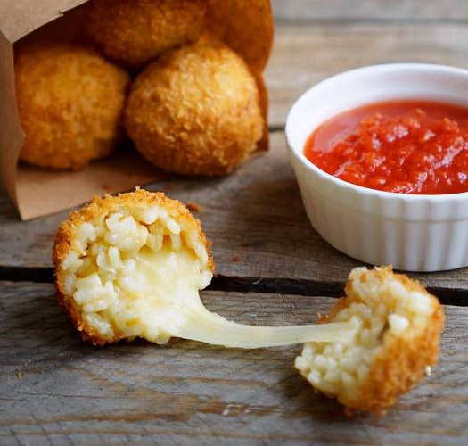

приготовление:
-
Первым делом заранее варится куриный бульон.
-
Далее готовится ризотто - это будет основой аранчини. Одну луковицу мелко порезать и обжарить до прозрачности на небольшом огне на растительном масле. Всыпать к луку 300гр. риса для ризотто и добавить пару черпаков горячего куриного бульона, помешать, дать рису впитать жидкость, потом добавить еще бульона, помешать и дать опять жидкости впитаться. Рис успевает приготовиться за 20 минут таких манипуляций. Дать ризотто остыть, чтобы не обжигаться при формировании шариков руками.
-
100-200гр. твердой моцареллы порезать квадратикими 1х1см. В отдельной мисочке взбить 2 яйца. И в отдельную тарелку насыпать панировочных сухарей. Далее берется часть ризотто, делается лепешка с вмятинкой на руке, в которую кладется кусочек сыра, и все это заворачивается, плотно скрепляется. Шарики откладываются на доску. Когда все сформированы - разогревается посолнечное масло для фритюра в глубокой сковороде или кастрюльке.
-
Когда масло достаточно разогреется (начнет шипеть, если капнуть вводу) - окунать шарики в яйцо, затем в панировку и опускать в масло. Следить, чтобы шарики не сгарели, переворачивать. Готовые румяные шарики промакнуть бумажным полотенцем.